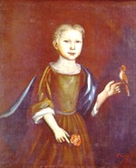

Catharina Ten Broeck Livingston
 Catharina Ten Broeck was born in September 1715. She was the daughter of Dirck and Margarita Cuyler Ten Broeck. She grew up in a large and prosperous family in Albany's third ward.
In September 1739, she married Albany native John Livingston at the Albany Dutch church. Over the next two decades, at least nine children were christened in Albany and at churches in New York City and elsewhere.
After more than a decade of living in the first ward of Albany, these Livingstons removed to New York and then to Montreal where John Livingston found success and was widely known as a merchant and trader.
In 1774, these Livingstons left Canada and settled on family property north of the Mohawk in what is today called "Stillwater." By that time, Catharina and her husband had inherited land in the Saratoga Patent. Their son became an important officer in the Revolutionary army.
Fleeing before the British invasion of 1777, Catharina's family fell back to the safety of their Albany property. After the war, they returned to Stillwater where John Livingston died in 1791. After that, Catharina came to live with her daughter in Albany.
Catharina Ten Broeck Livingston died in Albany in April 1801.
Portrait: Painted in 1719 by Nehemiah Partridge. Collection of the "Butler Institute of American Art." More about the portrait to follow!